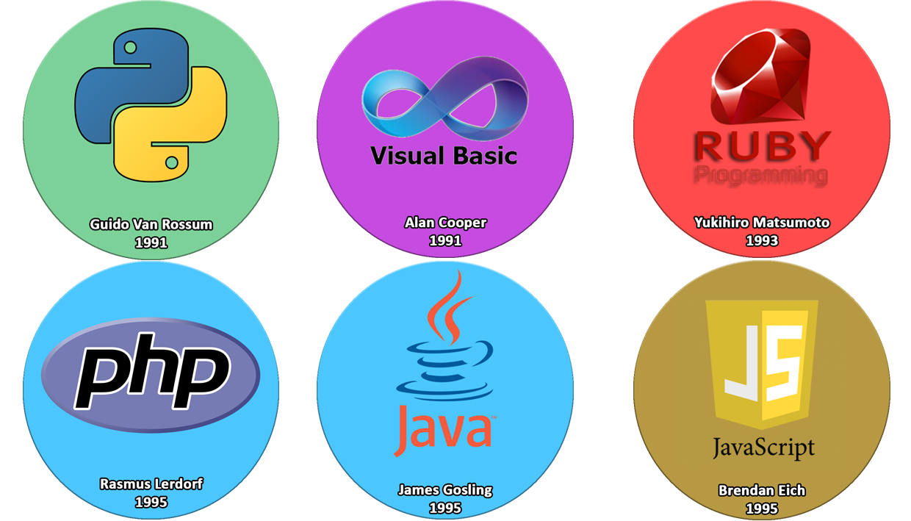

En 1991, Guido Van Rossum crea Python, lenguaje de programación interpretado e interactivo, sus principales usos son en aplicaciones web, desarrollo de software y seguridad informática, actualmente es usado por Google, Yahoo!, Netflix y Spotify.
En ese mismo año, Alan Cooper crea Visual Basic, este es un lenguaje de programación dirigido por eventos.
En 1993, Yukihiro Matsumoto crea Ruby, lenguaje de programación dinámico y de código abierto enfocado en la simplicidad y en la productividad, actualmente es usado por Twitter.
En 1995, Rasmus Lerdorf crea PHP, este lengueja se popularizo tanto que hoy en día es usado por más de 20 millones de web sites, hoy en día es usado por Wikipedia, wordpress, Facebook.
En ese mismo año, un equipo dirigido por James Gosling, crearon Java, hombre inspirado en la taza de café mientras se desarrollaba, fue creado para agregar botones a un sistema de televisión inteligente, actualmente es el lenguaje más popular en el mundo, funciona aproximadamente en más de 11 billones de pc alrededor del mundo y muchos sitios web no funcionarían sin él.
En ese mismo año llega Javascript, creado por Brendan Eich, fue creado para extender las funcionalidades de las páginas web, es actualmente usado por Gmail, Photoshop, entre otros.
En 1999, Anders Hejlsberg, diseño C#, lenguaje de programación orientado a objetos, es utilizado para el desarrollo de videojuegos y aplicaciones web en el entorno de la familia .NET